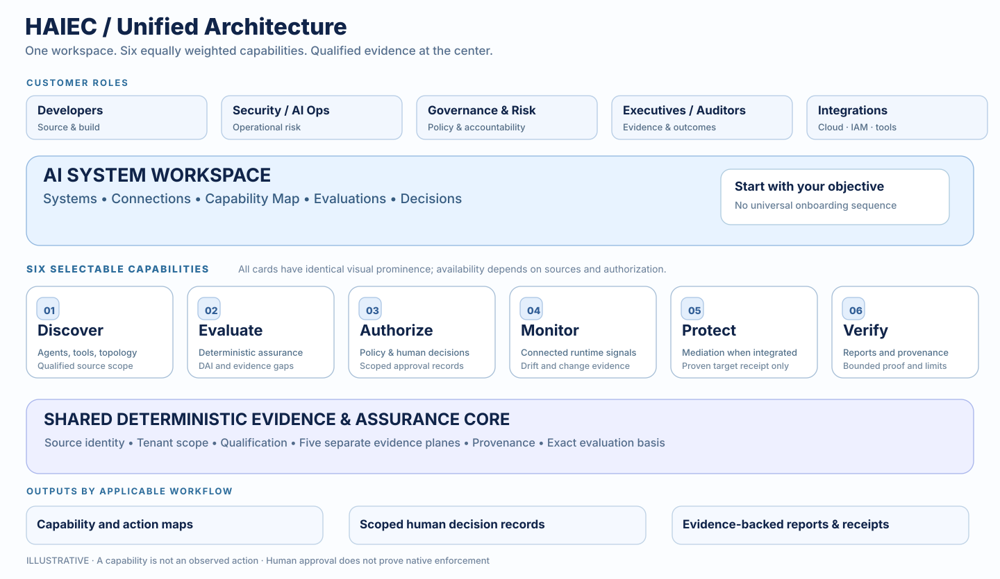
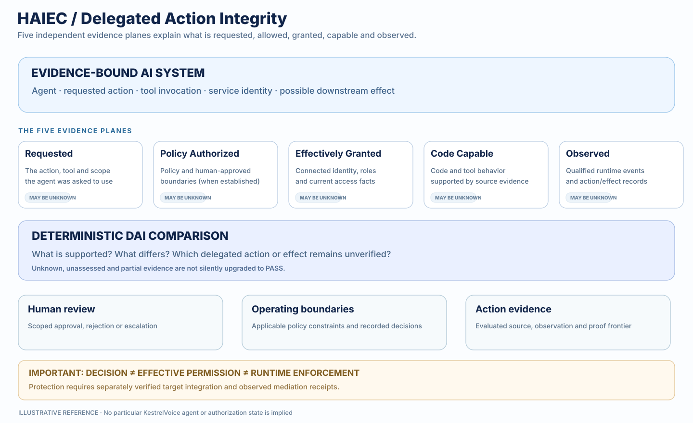
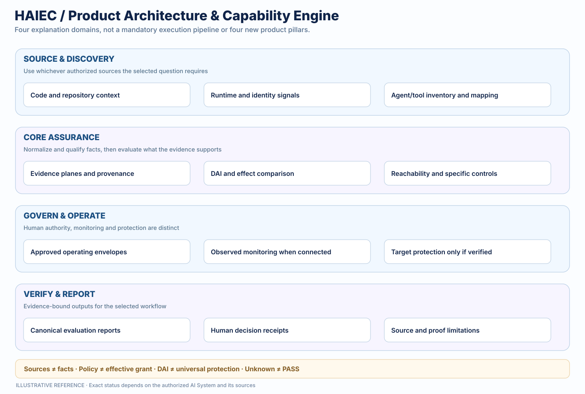

VISUAL 01 / Homepage /
Unified Product Architecture
Six independent capabilities, one qualified evidence foundation

Integration and SEO guidance
Replace only HeroFlowDiagram in the right hero visual slot. Preserve hero copy, CTA, ProductShowcase animated terminal, sample constellation and AuthorityPlanesFigure.
Target route: Homepage /.
VISUAL 02 / Homepage /#evidence-authority (existing section); /methodology deeper copy
Delegated Action Integrity & Evidence Relationships
Five evidence planes make delegated authority inspectable

Integration and SEO guidance
Within existing Evidence & Authority section alongside AuthorityPlanesFigure, or compact inline summary with expanded native HTML transcript. Do not replace AuthorityPlanesFigure.
Target route: Homepage /#evidence-authority (existing section); /methodology deeper copy.
VISUAL 03 / /enterprise/architecture
Evidence, Authority & Outcome Flow
From independently selected inputs to bounded assurance outputs

Integration and SEO guidance
Use as optional explanatory overview/introduction to existing 12-view architecture explorer. Avoid duplicating or replacing its views.
Target route: /enterprise/architecture.
VISUAL 04 / /platform
Capability & Workflow Matrix
Find the right job without requiring every HAIEC integration

Integration and SEO guidance
Implement primarily as a responsive native HTML table with row headers and corresponding short figure. Search engines and screen readers need HTML text, not only rendered image lettering.
Target route: /platform.
VISUAL 05 / /methodology
Product Architecture & Capability Engine
How HAIEC keeps fact qualification, evaluation and operations separate

Integration and SEO guidance
Use a compact explainer within the existing methodology page. Link to evidence definitions and detailed /enterprise/architecture.
Target route: /methodology.
Correct product language
Understand → Assure → Govern & Operate are three explanatory pillars. Discover, Evaluate, Authorize, Monitor, Protect, and Verify are selectable capabilities, not sequential mandatory steps. Five evidence planes remain distinct: Requested, Policy Authorized, Effectively Granted, Code Capable, Observed.
Search engines and accessibility technologies can read this native HTML narrative and each SVG title/description/text. For HAIEC website integration, render native headings, figure captions and text on the server; do not substitute raster screenshots for required HTML or UI content.